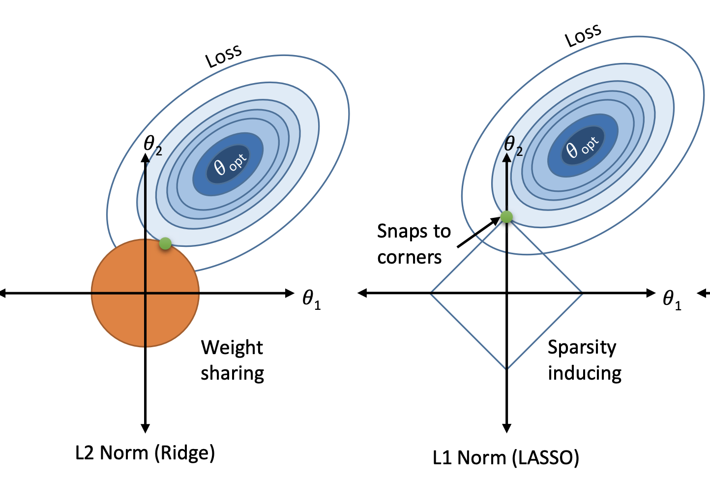
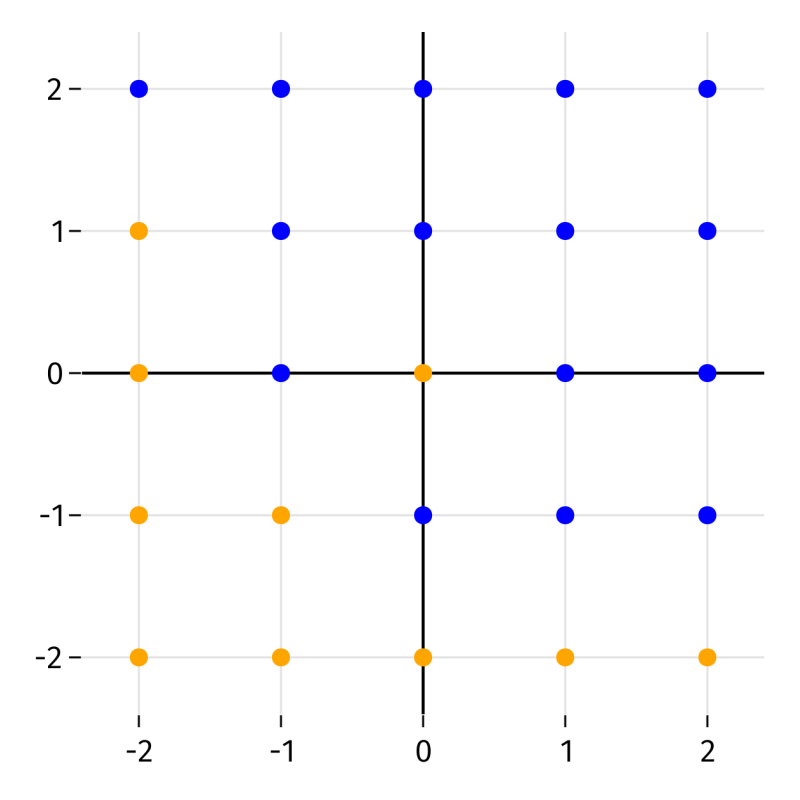

Definition 5.1 Regression is the task of approximating the value of a dependent quantitative variable as a function of independent variables, sometimes called predictors.
Regression and classification are distinct but not altogether different. Abstractly, both are concerned with reproducing a function \(f\) whose domain is feature space. In classification, the range of \(f\) is a finite set of class labels, while in regression, the range is the real number line (or an interval in it). We can always take the output of a regression and round or bin it to get a finite set of classes; therefore, any regression method can also be used for classification. Likewise, most classification methods have a generalization to regression.
In addition to prediction tasks, some regression methods can be used to identify the relative significance of each feature and whether is has a direct or inverse relationship to the function value. Unimportant features can then be removed to help minimize overfitting.
5.1 Linear regression
You have likely previously encountered the most basic form of regression: fitting a straight line to data points \((x_i,y_i)\) in the \(xy\)-plane. In linear regression, we have a one-dimensional feature \(x\) and assume a relation
\[
y \approx \hat{f}(x) = ax + b.
\]
We also define a loss function or misfit function that adds up how far predictions are from the data. The standard choice is a sum of squared differences between the predictions and the true values:
\[
L(a,b) = \sum_{i=1}^n (\hat{f}(x_i)-y_i)^2 = \sum_{i=1}^n (a x_i + b - y_i)^2.
\]
The loss can be minimized using a little multidimensional calculus. Momentarily suppose that \(b\) is held fixed and take a derivative with respect to \(a\):
The symbol \(\pp{}{}\) is called a partial derivative and is defined just as described here: differentiate in one variable while all others are temporarily held constant.
Similarly, if we hold \(a\) fixed and differentiate with respect to \(b\), then
Setting both derivatives to zero creates a system of two linear equations to be solved for \(a\) and \(b\): \[
\begin{split}
a \left(\sum_{i=1}^n x_i^2\right) + b\left(\sum_{i=1}^n x_i\right) &= \sum_{i=1}^n x_i y_i, \\
a \left(\sum_{i=1}^n x_i\right) + b n &= \sum_{i=1}^n y_i.
\end{split}
\tag{5.1}\]
Example 5.1 Suppose we want to find the linear regressor of the points \((-1,0)\), \((0,2)\), \((1,3)\). We need to calculate a few sums:
The regression function is \(\hat{f}(x)=\tfrac{3}{2} x + \tfrac{5}{3}\).
5.1.1 Linear algebra
Before moving on, we want to adopt a vector-oriented description of the process. If we define \[
\bfe = [1,1,\ldots,1] \in \real^n,
\] that is, \(\bfe\) as a vector of \(n\) ones, then \[
L(a,b) = \twonorm{a\, \bfx + b \,\bfe - \bfy}^2,
\] Minimizing \(L\) over all values of \(a\) and \(b\) is called the least squares problem. (More specifically, this setup is called simple least squares or ordinary least squares.)
We can write out the equations for \(a\) and \(b\) using another important idea from linear algebra.
Definition 5.2 Given any \(d\)-dimensional real-values vectors \(\bfu\) and \(\bfv\), their inner product is \[
\bfu^T \bfv = \sum_{i=1}^d u_i v_i = u_1v_1 + u_2v_2 + \cdots + u_d v_d.
\tag{5.2}\]
The vector inner product is defined only between two vectors of the same length (dimension). There is an important link between the inner product and the 2-norm: \[
\bfu^T \bfu = \sum_{i=1}^d u_i^2 = \twonorm{\bfu}^2.
\tag{5.3}\]
Note
Inner product is a term from linear algebra. In physics and vector calculus with \(d=2\) or \(d=3\), the same thing is often called a dot product and written as \(\bfu \cdot \bfv\).
Note
The \({}^T\) symbol is a transpose operation in linear algebra. We won’t need it as an independent concept, so we are just using it as notation in the inner product.
Example 5.2 Let \(\bfu = [1,-1,1,-2]\) and \(\bfv = [5,3,-1,2]\). Then \[
\bfu^T \bfv = (1)(5) + (-1)(3) + (1)(-1) + (-2)(2) = -3.
\] We also have \[
\twonorm{\bfu}^2 = \bfu^T \bfu = (1)^2 + (-1)^2 + (1)^2 + (-2)^2 = 7.
\]
The equations in Equation 5.1 may now be written as \[
\begin{split}
a \left(\bfx^T \bfx\right) + b \left(\bfx^T\bfe\right) &= \bfx^T\bfy, \\
a \left(\bfe^T \bfx\right) + b \left(\bfe^T\bfe\right) &= \bfe^T\bfy.
\end{split}
\tag{5.4}\]
We can write this as a single equation between two vectors: \[
a
\begin{bmatrix}
\bfx^T \bfx \\ \bfe^T \bfx
\end{bmatrix}
+ b
\begin{bmatrix}
\bfx^T\bfe \\ \bfe^T\bfe
\end{bmatrix}
=
\begin{bmatrix}
\bfx^T\bfy \\ \bfe^T\bfy
\end{bmatrix}.
\] In fact, the operation on the left-hand side is how we define the product of a matrix and a vector, and we can write \[
\begin{bmatrix}
\bfx^T \bfx & \bfx^T\bfe \\
\bfe^T \bfx & \bfe^T\bfe
\end{bmatrix}
\cdot
\begin{bmatrix}
a \\ b
\end{bmatrix}
=
\begin{bmatrix}
\bfx^T\bfy \\ \bfe^T\bfy
\end{bmatrix}.
\] This is referred to as a linear system of equations for the unknown vector \([a,b]\). Linear systems and their solutions are the central topic of linear algebra. In the background, it is this linear system that is being solved when you perform a linear regression fit.
5.1.2 Performance metrics
We need to establish ways to measure regression performance. Unlike with binary classification, in regression it’s not just a matter of right and wrong answers—the amount of wrongness matters, too.
In this section, we will use \(x_i\) for \(i=1,\ldots,n\) to mean the training set features, \(y_i\) to mean the corresponding training values, and \(\hat{y}_i\) to mean the values predicted on the training set by the regressor.
Definition 5.3 The residuals of the regression are \[
y_i - \hat{y}_i, \qquad i=1,\ldots,n.
\tag{5.5}\] We can express them as the vector \(\bfy-\hat{\bfy}\).
A quirk of linear regression is that it’s an older idea than most of machine learning, and it’s often presented as though the training and testing sets are identical. We therefore give the following definitions in terms of \(\bfy\) and \(\hat{\bfy}\) arising from the training data. The same quantities can also be calculated for a set of labels and predictions obtained from a separate testing set, though a few of the properties stated here don’t apply in that case.
Danger
The terms error and residual are frequently used interchangeably and even inconsistently. I try to follow the most common practices here, even though the names can be confusing if you think about them too hard.
Definition 5.4 The mean squared error (MSE) is \[
\text{MSE} = \frac{1}{m} \sum_{i=1}^m \, \left( y_i - \hat{y}_i \right)^2 = \frac{1}{m} \twonorm{\bfy - \hat{\bfy}}^2.
\] The mean absolute error (MAE) is \[
\text{MAE} = \frac{1}{m} \sum_{i=1}^m \abs{y_i - \hat{y}_i }= \frac{1}{m} \onenorm{\bfy - \hat{\bfy}}.
\]
MAE is less sensitive than MSE to large outliers. Both quantities are dimensional and therefore depend on how the variables are scaled, but at least the units of MAE are the same as of the data.
Definition 5.5 The coefficient of determination (CoD) is denoted \(R^2\) and defined as \[
R^2 = 1 - \frac{\displaystyle\sum_{i=1}^n \,\left(y_i - \hat{y}_i \right)^2}{\displaystyle\sum_{i=1}^n \, \left(y_i - \bar{y}\right)^2},
\] where \(\bar{y}\) is the mean of \(y_1,\ldots,y_n\).
Here are important things to know about the coefficient of determination.
Theorem 5.1
The CoD is dimensionless and therefore independent of scaling.
If the \(\hat{y}_i\) are found from a linear regression, then \(R^2\) is the square of the Pearson correlation coefficient between \(\bfy\) and \(\hat{\bfy}\).
If \(\hat{y}_i=y_i\) for all \(i\) (i.e., perfect predictions), then \(R^2=1\).
If \(\hat{y}_i=\bar{y}\) for all \(i\) (i.e., always predict the sample mean), then \(R^2=0\).
Warning
The notation \(R^2\) is highly unfortunate, because for other regression methods, \(R^2\) can actually be negative! Such a result indicates that the predictor is doing worse than just predicting the mean value every time. It has nothing to do with imaginary numbers.
Example 5.3 Let’s find the coefficient of determination for the fit in Example 5.1, where we found the regressor \(\hat{f}(x)=\tfrac{3}{2} x + \tfrac{5}{3}\). Now \(\bar{y} = \frac{1}{3}(0+2+3)=\frac{5}{3}\), and
This yields \(R^2 = 1 - (9)(3/14) = -13/14\). Since the result is negative, we would be better off always predicting \(5/3\).
Example 5.4 We import data about the extent of sea ice in the Arctic circle, collected monthly since 1979:
ice = pd.read_csv("_datasets/sea-ice.csv")# Simplify column names:ice.columns = [s.strip() for s in ice.columns] ice.head()
year
mo
data-type
region
extent
area
0
1979
1
Goddard
N
15.41
12.41
1
1980
1
Goddard
N
14.86
11.94
2
1981
1
Goddard
N
14.91
11.91
3
1982
1
Goddard
N
15.18
12.19
4
1983
1
Goddard
N
14.94
12.01
A quick plot reveals something odd-looking:
sns.relplot(data=ice, x="mo", y="extent");
Everything in the plot above is dominated by two large negative values. These probably represent missing data, so we make a new copy without those rows:
While the effect of the seasonal variation somewhat cancels out over time when fitting a line, it’s preferable to remove this obvious trend before the fit takes place. To do that, we add a column that measures within each month group the relative change from the mean, \[
\frac{x-\bar{x}}{\bar{x}}.
\] This is done with a transform method applied to the grouped frame:
An lmplot in seaborn shows the least squares line:
sns.lmplot(data=ice, x="year", y="detrended");
However, we should be mindful of Simpson’s paradox. The previous plot showed considerably more variance within the warm months. How do these fits look for the data within each month? This is where a facet plot shines:
Thus, while the correlation is negative within each month, the effect size is clearly larger in the summer and early fall.
We can get numerical information about a regression line from a LinearRegression() learner in sklearn. We will focus on the data for August:
from sklearn.linear_model import LinearRegressionlm = LinearRegression()ice = ice[ ice["mo"]==8 ]X = ice[ ["year"] ] y = ice["detrended"]lm.fit(X, y)
LinearRegression()
In a Jupyter environment, please rerun this cell to show the HTML representation or trust the notebook. On GitHub, the HTML representation is unable to render, please try loading this page with nbviewer.org.
LinearRegression()
We can get the slope and \(y\)-intercept of the regression line from the learner’s properties. (Calculated parameters tend to have underscores at the ends of their names in sklearn.)
slope, intercept = lm.coef_[0], lm.intercept_print(f"Slope is {slope:.3g} and intercept is {intercept:.3g}")
Slope is -0.011 and intercept is 22.1
The slope indicates average decrease over time.
Next, we assess the performance on the training set. Both the MSE and mean absolute error are small relative to dispersion within the values themselves:
from sklearn.metrics import mean_squared_error, mean_absolute_erroryhat = lm.predict(X)mse = mean_squared_error(y, yhat)mae = mean_absolute_error(y, yhat)print(f"MSE: {mse:.2e}, compared to variance {y.var():.2e}")print(f"MAE: {mae:.2e}, compared to standard deviation {y.std():.2e}")
MSE: 4.01e-03, compared to variance 2.33e-02
MAE: 4.93e-02, compared to standard deviation 1.53e-01
The score method of the regressor object computes the coefficient of determination:
R2 = lm.score(X, y)print(f"R-squared: {R2:.3f}")
R-squared: 0.824
An \(R^2\) value this close to 1 would usually be considered a sign of a good fit, although we have not tested for generalization to new data.
5.2 Multilinear regression
We can extend linear regression to \(d\) predictor variables \(x_1,\ldots,x_d\):
\[
y \approx \hat{f}(\bfx) = b + w_1 x_1 + w_2x_2 + \cdots w_d x_d.
\]
First, observe that we can actually drop the intercept term \(b\) from the discussion, because we could always define an additional constant feature \(x_0=1\) and get the same effect in one higher dimension. So we will use the following.
Definition 5.6 Multilinear regression is the approximation \[
y \approx \hat{f}(\bfx) = w_1 x_1 + w_2x_2 + \cdots w_d x_d = \bfw^T\bfx,
\] for a constant vector \(\bfw\) known as the weight vector.
Note
Multilinear regression is also simply called linear regression most of the time. What we previously called linear regression is just a special case. The LinearRegression learner class does both types of fits.
As before, we find the unknown weight vector \(\bfw\) by minimizing a loss function. To create the least-squares loss function, we use \(\bfx_i\) to denote the \(i\)th row of an \(n\times d\) feature matrix \(\bfX\). Then
We encountered a matrix-vector product earlier. It turns out that the following definition is equivalent.
Definition 5.7 Given an \(n\times d\) matrix \(\bfX\) with rows \(\bfx_1,\ldots,\bfx_n\) and a \(d\)-vector \(\bfw\), the product \(\bfX\bfw\) is defined by \[
\bfX \bfw =
\begin{bmatrix}
\bfx_1^T\bfw \\ \bfx_2^T\bfw \\ \vdots \\ \bfx_n^T\bfw
\end{bmatrix}.
\]
As in the \(d=1\) case, minimizing the loss is equivalent to solving a linear system of equations known as the normal equations for \(\bfw\). We do not present them here.
Danger
Be careful interpreting the magnitudes of regression coefficients. These are sensitive to the units and scales of the features. For example, distances expressed in meters would have a coefficient that is 1000 times larger than the same distances expressed in kilometers. For quantitative comparisons, it helps to standardize the features first, which does not affect the quality of the fit.
Example 5.5 We return to the data set regarding the fuel efficiency of cars:
In order to ease experimentation, we define a function that fits a given learner to the mpg variable using a given list of features from the data frame:
def fitcars(model, features): X = cars[features] y = cars["mpg"] X_train, X_test, y_train, y_test = train_test_split( X, y, test_size=0.2, shuffle=True, random_state=302 ) model.fit(X_train, y_train) MSE = mean_squared_error(y_test, model.predict(X_test))print(f"MSE: {MSE:.3f}, compared to variance {y_test.var():.3f}")returnNone
Tip
When you run the same lines of code over and over with only a slight change at the beginning, it’s advisable to put that code into a function. It makes the overall code shorter and easier to understand and adapt.
First, we try using horsepower as the only feature in a linear regression to fit mpg:
features = ["horsepower"]lm = LinearRegression( fit_intercept=True )fitcars(lm, features)
MSE: 26.354, compared to variance 56.474
As we would expect, there is an inverse relationship between horsepower and vehicle efficiency:
lm.coef_
array([-0.1596552])
Next, we add displacement to the regression:
features = ["horsepower", "displacement"]fitcars(lm, features)
MSE: 19.683, compared to variance 56.474
The error has decreased from the univariate case because we have a more capable model.
Finally, we try using 4 features as predictors. In order to help us compare the regression coefficients, we chain the model with a StandardScaler so that all columns are z-scores:
features = ["horsepower", "displacement", "cylinders", "weight"]pipe = make_pipeline(StandardScaler(), lm)fitcars(pipe, features)
MSE: 19.266, compared to variance 56.474
We did not get much improvement in the fit this time. But by comparing the coefficients of the individual features, some interesting information emerges:
We now have evidence that weight is the most significant negative factor for MPG, by a wide margin.
In the next example, we will see that we can create new features from the ones that are initially given. Sometimes these new features add a lot to the quality of the regression.
Example 5.6 Here we load data about advertising spending on different media in many markets:
Pairwise scatter plots yield some hints about what to expect from this dataset:
sns.pairplot(data=ads, height=1.8);
The clearest association between Sales and spending is with TV. So we first try a univariate linear fit of sales against TV spending alone:
X = ads[ ["TV"] ] # has to be a frame, so ["TV"] not "TV"y = ads["Sales"]lm = LinearRegression()lm.fit(X, y)print("R^2 score:", f"{lm.score(X, y):.4f}")print("Regression weight:", lm.coef_)
R^2 score: 0.8122
Regression weight: [0.05546477]
The coefficient of determination is already quite good. Since we are going to do multiple fits with different features, we write a function that does the grunt work:
def regress(lm, data, y, features): X = data[features] lm.fit(X, y) R2 = lm.score(X,y)print("R^2 score:", f"{R2:.5f}")print("Regression weights:")print( pd.Series(lm.coef_, index=features) )returnNone
The additional feature had very little effect on the quality of fit. We go on to fit using all three features:
regress(lm, ads, y, ["TV", "Newspaper", "Radio"])
R^2 score: 0.90259
Regression weights:
TV 0.054446
Newspaper 0.000336
Radio 0.107001
dtype: float64
Judging by the weights of the model, it’s even clearer now that we can explain Sales very well without contributions from Newspaper. In order to reduce model variance, it would be reasonable to leave that column out. Doing so has a negligible effect:
regress(lm, ads, y, ["TV", "Radio"])
R^2 score: 0.90259
Regression weights:
TV 0.054449
Radio 0.107175
dtype: float64
While we have a very good \(R^2\) score now, we can try to improve it. We can add an additional feature that is the product of TV and Radio, representing the possibility that these media reinforce one another’s effects:
X = ads[ ["Radio", "TV"] ].copy()X["Radio*TV"] = X["Radio"]*X["TV"]regress(lm, X, y, X.columns)
R^2 score: 0.91404
Regression weights:
Radio 0.042270
TV 0.043578
Radio*TV 0.000443
dtype: float64
Tip
In order to modify a frame, it has to be an independent copy, not just a subset of another frame.
We did see some increase in the \(R^2\) score, and therefore the combination of both types of spending does have a positive effect on Sales.
It’s not uncommon to introduce a product term as done in Example 5.6, and more exotic choices are also possible. Keep in mind, though, that additional variables usually add variance to the model, even if they don’t seriously affect the bias.
Interpreting linear regression is a major topic in statistics. There are tests that can lend much more precision and rigor to the brief discussion above.
5.2.1 Polynomial regression
A special case of multilinear regression is when there is initially a single predictor variable \(t\), and then we define
\[
y \approx w_1 + w_2 t + \cdots + w_d t^{d-1},
\]
which is a polynomial of degree \(d-1\). This allows representation of data that depends on \(t\) in ways more complicated than a straight line. However, it can lead to overfitting if taken too far.
We don’t have to add polynomial features manually, if we use a pipeline instead.
Example 5.7 We return to the data set regarding the fuel efficiency of cars:
In order to produce the cubic fit within sklearn, we use the PolynomialFeatures preprocessor in a pipeline. If the original predictor variable is \(t\), then the preprocessor will create features for \(1\), \(t\), \(t^2\), and \(t^3\). (Since the constant feature is added in, we don’t need to fit the intercept with the linear regressor.)
The coefficients go in order of increasing degree.
If a cubic polynomial can fit better than a line, it’s plausible that increasing the degree more will lead to even better fits. In fact, the training error can only go down, because a lower-degree polynomial case is a subset of a higher-degree case.
Example 5.8 Continuing with Example 5.7, we explore the effect of polynomial degree, we split into train and test sets:
MSE for degree 2: 16.013
MSE for degree 3: 15.911
MSE for degree 4: 15.819
MSE for degree 5: 15.653
MSE for degree 6: 15.649
MSE for degree 7: 15.593
MSE for degree 8: 18.177
MSE for degree 9: 28.510
MSE for degree 10: 55.261
The results above are a clear example of overfitting and the bias–variance tradeoff. A plot of the degree-10 fit shows that the polynomial becomes more oscillatory:
This is our best regression fit so far, by a mile.
5.3 Regularization
As a general term, regularization refers to modifying something that is difficult to compute accurately with something more tractable. For learning models, regularization is a common way to combat overfitting.
Suppose we had an \(\real^{n\times 4}\) feature matrix in which the features are identical; that is, the predictor variables satisfy \(x_1=x_2=x_3=x_4\), and suppose the target \(y\) also equals \(x_1\). Clearly, we get a perfect regression if we use
A problem with more than one valid solution is called ill-posed. If we made tiny changes to the predictor variables in this thought experiment, the problem would technically be well-posed, but there would be a wide range of solutions that were very nearly correct, in which case the problem is said to be ill-conditioned; for practical purposes, it remains just as difficult.
The poor conditioning can be regularized away by modifying the least-squares loss function to penalize complexity in the model, in the form of excessively large regression coefficients. The common choices are ridge regression,
As \(\alpha\to 0\), both forms revert to the usual least-squares loss, but as \(\alpha \to \infty\), the optimization becomes increasingly concerned with prioritizing a small result for \(\bfw\).
While ridge regression is an easier function to minimize quickly, LASSO has an interesting advantage, as illustrated in this figure.

LASSO tends to produce sparse results, meaning that some of the regression coefficients are zero or negligible. These zeros indicate predictor variables that have minor predictive value, which can be valuable information in itself. Moreover, when regression is run without these variables, there may be little effect on the bias, but a reduction in variance.
5.3.1 Case study: Diabetes
We’ll apply regularized regression to data collected about the progression of diabetes:
Ridge regularization added a penalty for the 2-norm of the regression coefficients vector. Accordingly, the regularized solution has smaller coefficients:
from numpy.linalg import normprint(f"2-norm of unregularized coefficients: {norm(lm.coef_):.1f}")print(f"2-norm of ridge coefficients: {norm(rr.coef_):.1f}")
2-norm of unregularized coefficients: 1525.2
2-norm of ridge coefficients: 605.9
As we continue to increase the regularization parameter, the method becomes increasingly obsessed with keeping the coefficient vector small and pays ever less attention to the data:
for alpha in [0.25, 0.5, 1, 2]: rr = Ridge(alpha=alpha) # more regularization rr.fit(X_tr, y_tr)print(f"alpha = {alpha:.2f}")print(f"2-norm of coefficient vector: {norm(rr.coef_):.1f}")print(f"ridge regression CoD score: {rr.score(X_te, y_te):.4f}")print()
We can rank the relative importance of the features by ordering them in terms of decreasing coefficient magnitude:
# Get the permutation that sorts values in increasing order.order = np.argsort( np.abs(lass.coef_) ) order = order[::-1] # reverse the orderpd.Series( order, index=X.columns )
age 8
sex 2
bmi 3
bp 6
s1 1
s2 4
s3 9
s4 7
s5 5
s6 0
dtype: int64
Returning to a fit with no regularization, we find that little is lost by using the reduced feature set:
print(f"original linear model score: {lm.score(X_te,y_te):.4f}")lm.fit(X_tr_reduced, y_tr)R2 = lm.score(X_te_reduced, y_te)print(f"reduced linear model score: {R2:.4f}")
original linear model score: 0.4399
reduced linear model score: 0.4388
5.4 Nonlinear regression
Multilinear regression limits the representation of the dataset to a function of the form \[
\hat{f}(\bfx) = \bfw^T \bfx.
\] This is a linear function, meaning that two key properties are satisfied. For all possible vectors \(\bfu,\bfv\) and numbers \(c\),
These properties are the essence of what makes a function easy to manipulate, solve for, and analyze. For our particular \(\hat{f}\), they follow easily from how the inner product is defined. For example, \[
\hat{f}(c\bfu) = (c\bfu)^T\bfw = \sum_{i=1}^d (cu_i) w_i = c \sum_{i=1}^d u_i w_i = c(\bfu^T\bfw) = c \hat{f}(\bfu).
\]
One benefit of the linear approach is that the dependence of the weight vector \(\bfw\) on the regressed data is also linear, which makes solving for it relatively straightforward.
As the simplest type of multidimensional function, linear relationships are a good first resort. Furthermore, we can augment the features with powers in order to get polynomial relationships. However, that approach becomes infeasible for more than 2 or 3 dimensions, because the number of polynomial terms needed explodes. While there is a way around this restriction known as the kernel trick, that’s beyond our mathematical scope here.
Alternatively, we can resort to fully nonlinear regression methods. Two of them come from generalizations of our staple classifiers.
5.4.1 Nearest neighbors
To use kNN for regression, we find the \(k\) nearest examples as with classification, but replace voting on classes with the mean or median of the neighboring values. A simple example confirms that the resulting approximation is not linear.
Example 5.9 Suppose we have just two samples with one-dimensional features: \(x_1=0\) and \(x_2=2\), and let the corresponding sample values be \(y_1=0\) and \(y_2=1\). Using kNN with \(k=1\), the resulting approximation \(\hat{f}(x)\) is \[
\hat{f}(x) =
\begin{cases}
0, & x < 1, \\
\tfrac{1}{2}, & x=1, \\
1, & x > 1.
\end{cases}
\] (Convince yourself that the result is the same whether the mean or the median is used.) Thus, for instance, \(\hat{f}(1.2)=1\), while \(2\hat{f}(0.6) = 0\), which is not equal to \(\hat{f}(2 \cdot 0.6)\).
kNN regression can produce a function that conforms itself to the training data much more closely than a linear regressor does. This can both decrease bias and increase variance, especially for small values of \(k\). As illustrated in the following video, increasing \(k\) flattens out the approximation, decreasing variance while increasing bias.
As with classification, we can choose the norm to use and whether to weight the neighbors equally or by inverse distance. As a reminder, it is usually advisable to work with z-scores for the features rather than raw data.
Example 5.10 We return again to the dataset of cars and their fuel efficiency. A linear regression on four quantitative features is only OK:
As you can see above, we got some improvement over the linear regressor.
5.4.2 Decision tree
Recall that a decision tree recursively divides the examples into subsets. As with kNN, we can replace taking a classification vote over a leaf subset with taking a mean or median of the values. But the method of determining splits needs to be changed as well.
Instead of using a measure of subset impurities to determine the best split, the split is chosen to cause the greatest reduction in dispersion within the two subsets. The most common choices for the dispersion measure \(H\) are:
If using the mean of subset values, then let \(H\) be standard deviation.
If using the median of subset values, then let \(H\) be mean absolute deviation (MAD), defined as \[
\text{MAD} = \frac{1}{m} \sum_{i=1}^m | t_i - t_\text{med} |
\] for any list of values \(t_1,\ldots,t_m\) and \(t_\text{med}\) equal to the median value.
As with classification, a proposal to split into subsets \(S\) and \(T\) is assigned the weighted score \[
Q = |S| H(S) + |T| H(T).
\] The split location is chosen to minimize \(Q\).
Example 5.11 Suppose we are given the observations \(x_i=i\), \(i=1,\ldots,4\), where \(y_1=2\), \(y_2=-1\), \(y_3=1\), \(y_4=0\). Let’s find the decision tree regressor using medians/MAD.
The original value set has median \(\frac{1}{2}\) and gets a weighted dispersion of \(\frac{5}{2}(3+3+1+1)=20\). There are three ways to split the data, depending on where the partition falls in relation to the \(x_i\):
Thus, the first split above produces the smallest total dispersion.
To predict a value for a query \(x\), we follow the tree until ending at a leaf, where we use the mean (if dispersion is STD) or median (if dispersion is MAD) of the examples in the leaf.
The default in sklearn is to use STD as the dispersion measure (called squared_error in sklearn). Here is a shallow tree fitted to the data:
from sklearn.tree import DecisionTreeRegressor, plot_treedtree = DecisionTreeRegressor(max_depth=2)dtree.fit(X, y)
DecisionTreeRegressor(max_depth=2)
In a Jupyter environment, please rerun this cell to show the HTML representation or trust the notebook. On GitHub, the HTML representation is unable to render, please try loading this page with nbviewer.org.
DecisionTreeRegressor(max_depth=2)
Code
from matplotlib.pyplot import figurefigure(figsize=(17,10), dpi=160)plot_tree(dtree,feature_names=["x₁","x₂"]);
All of the original samples end up in one of the four leaves. We can find out the tree node number that each sample ends up at using apply:
leaf = dtree.apply(X)print(leaf)
[3 3 2 5 2 2 3 2 2 2 5 6 5 5 3 5 6 6 2 5]
From the above we deduce that the leaves are the nodes numbered 2, 3, 5, and 6. With some pandas grouping, we can find out the mean value for the samples within each of these:
leaves = pd.DataFrame( {"y": y, "leaf": leaf} )leaves.groupby("leaf")["y"].mean()
Sometimes a regressed value is subject to certain known bounds or other conditions. A major example is probability, which has to be between 0 and 1 (inclusive).
A linear regressor, \(\hat{f}(\bfx) = \bfw^T \bfx\) for a constant vector \(\bfw\), typically ranges over all of \((-\infty,\infty)\). In order to get a result that must lie within \([0,1]\), we can transform its output using the logistic function, defined as
\[
\sigma(x) = \frac{1}{1+e^{-x}}.
\]
The logistic function has the real line as its domain and takes the form of a smoothed step increasing from 0 to 1:
Given samples of a probability variable \(p(\bfx)\), the regression task is to find a weight vector \(\bfw\) so that \[
p \approx \sigma(\bfx^T\bfw).
\] The result is known as logistic regression. A common way to use logistic regression is for binary classification. Suppose we have training samples \((\bfx_i, y_i)\), \(i=1,\ldots,n\), where for each \(i\) either \(y_i=0\) or \(y_i=1\). The resulting approximation to \(p\) at some query \(\bfx\) can then be interpreted as the probability of observing a 1 at \(\bfx\).
In order to fully specify the regressor, we need to specify a loss function to be optimized.
5.5.1 Loss function
Defining \(\hat{p}_i = \sigma(\bfx_i^T\bfw)\) at all the training points, a straightforward loss function would be \[
\sum_{i=1}^n \left( \hat{p}_i - y_i \right)^2.
\] For binary classification, however, it’s more common to use the cross-entropy loss function \[
L(\bfw) = -\sum_{i=1}^n \left[ y_i \log(\hat{p}_i) + (1-y_i) \log(1-\hat{p}_i) \right].
\tag{5.7}\] (The logarithms in Equation 5.7 can be in any base, since that choice only affects \(L\) by a constant factor.) In cross-entropy loss, sample \(i\) contributes \[
-\log(1-\hat{p}_i)
\] if \(y_i=0\), which becomes infinite as \(\hat{p}_i\to 1^-\), and \[
-\log(\hat{p}_i)
\] if \(y_i=1\), which becomes infinite as \(\hat{p}_i\to 0^+\). In words, there is a steep penalty for being almost completely wrong about an observation.
Logistic regression does have a major disadvantage compared to linear regression: the minimization of loss does not lead to a linear problem for the weight vector \(\bfw\). The difference in practice is usually not a concern, though.
5.5.2 Regularization
As with other forms of regression, the loss function may be regularized using the ridge or LASSO penalty. The standard formulation is
\[
\widetilde{L}(\bfw) = C \, L(\bfw) + \norm{\bfw},
\]
where \(C\) is a positive hyperparameter and the vector norm is either the 2-norm (ridge) or 1-norm (LASSO).
Important
The parameter \(C\) functions like the inverse of the regularization parameter \(\alpha\) we used in the linear regressor. It’s just a different convention chosen historically. As \(C\) decreases, the regularization strength increases.
5.5.3 Case study: Personal spam filter
We will try logistic regression for a simple spam filter. The data set is based on work and personal emails for one individual. The features are calculated word and character frequencies, as well as the appearance of capital letters.
We create a feature matrix and label vector, and split into train/test sets:
X = spam.drop("class", axis="columns")y = spam["class"]X_tr, X_te, y_tr, y_te = train_test_split( X, y, test_size=0.2, shuffle=True, random_state=1 )
When using norm-based regularization, it’s good practice to standardize the variables, so we will use scaling pipelines. First we use a large value of \(C\) to emphasize the regressive loss over the regularization penalty:
The word “george” is a strong counter-indicator for spam; remember that this data set comes from an individual’s inbox. Its presence makes the inner product \(\bfx^T\bfw\) more negative, which drives the logistic function closer to 0. Conversely, the presence of consecutive capital letters increases the inner product and pushes the probability closer to 1.
The ultimate predictions by the regressor are all either 0 or 1. But we can also see the forecasted probabilities before thresholding:
The probabilities might be useful for making decisions based on the results. For example, the first instance above was much less certain about the classification than the second. A more skeptical threshold greater than \(0.54\) would change the class to 1. As in Section 3.5, the probability matrix can be used to create an ROC curve showing the tradeoffs over all thresholds.
For a validation-based selection of the best regularization parameter value, we can use LogisticRegressionCV, which is a convenience method for a grid search. You can specify which values of \(C\) to search over, or just say how many, as we do here:
from sklearn.linear_model import LogisticRegressionCVlogr = LogisticRegressionCV( Cs=40, # 40 automatically chosen values of C cv=5, solver="liblinear", n_jobs=-1, random_state=0 )pipe = make_pipeline(StandardScaler(), logr)pipe.fit(X_tr, y_tr)print(f"best C value: {logr.C_[0]:.3g}")print(f"accuracy score: {pipe.score(X_te,y_te):.5f}")
best C value: 21.5
accuracy score: 0.93485
5.5.4 Multiclass case
When there are more than two unique labels possible, logistic regression can be extended through the one-vs-rest (OVR) paradigm we have used previously.
Given \(K\) classes, there are \(K\) binary regressors fit for the outcomes “class 1/not class 1,” “class 2/not class 2,” and so on, giving \(K\) different coefficient vectors, \(\bfw_k\). Now for a query point \(\bfx\), we can predict probabilities for it being in each class:
Since the \(K\) OVR regressors are done independently, there is no reason to think these probabilities will sum to 1 over all the classes. So we must normalize them:
Computed over a testing set, we get a matrix of probabilities. Each of the rows gives the class probabilities at a single query point, and each of the \(K\) columns gives the probability of one class at all the points.
Example 5.14 As a multiclass example, we use a data set about gas sensors recording values over long periods of time:
Based on the ROC curves, we could choose a high decision threshold to cut down on false positives without losing many true positives.
Exercises
Exercise 5.1 Suppose that the distinct plane points \((x_i,y_i)\) for \(i=1,\ldots,n\) are to be fit using a linear function without intercept, \(\hat{f}(x)=\alpha x\). Use calculus to find a formula for the value of \(\alpha\) that minimizes the sum of squared residuals, \[ r = \sum_{i=1}^n (f(x_i)-y_i)^2. \]
Exercise 5.2 Suppose that \(x_1=-2\), \(x_2=1\), and \(x_3=2\). Define \(\alpha\) as in Exercise 5.1, and define the predicted values \(\hat{y}_k=\alpha x_k\) for \(k=1,2,3\). Express each \(\hat{y}_k\) as a combination of the three values \(y_1\), \(y_2\), and \(y_3\), which remain arbitrary. (This is a special case of a general fact about linear regression: each prediction is a linear combination of the training values.)
Exercise 5.3 Using the formulas derived in Section 5.1, show that the point \((\bar{x},\bar{y})\) always lies on the linear regression line. (Hint: You only have to show that \(f(\bar{x}) = \bar{y}\). This can be done without first solving for \(a\) and \(b\), which is a bit tedious to write out.)
Exercise 5.4 Suppose that values \(y_i\) for \(i=1,\ldots,n\) are to be fit to features \((u_i,v_i)\) using a multilinear function \(f(u,v)=\alpha u + \beta v\). Define the sum of squared residuals \[
r = \sum_{i=1}^n (f(u_i,v_i)-y_i)^2.
\] Show that by holding \(\alpha\) is constant and taking a derivative with respect to \(\beta\), and then holding \(\beta\) constant and taking a derivative with respect to \(\alpha\), at the minimum residual we must have \[
\begin{split}
\left(\sum u_i^2 \right) \alpha + \left(\sum u_i v_i \right) \beta &= \sum u_i y_i, \\
\left(\sum u_i v_i \right) \alpha + \left(\sum v_i^2 \right) \beta &= \sum v_i y_i.
\end{split}
\]
::::{#exr-regression-regular-no-intercept} Repeat Exercise 5.1, but using the regularized residual \[
\tilde{r} = C \alpha^2 + \sum_{i=1}^n (f(x_i)-y_i)^2.
\]
Exercise 5.5 Repeat Exercise 5.4, but using the regularized residual \[
\tilde{r} = C (\alpha^2 + \beta^2) + \sum_{i=1}^n (f(u_i,v_i)-y_i)^2.
\]
Exercise 5.6 Given the data set \((x_i,y_i)=\{(0,-1),(1,1),(2,3),(3,0),(4,3)\}\), find the MAD-based \(Q\) score for the following hypothetical decision tree splits.
(a)\(x \le 0.5\quad\)
(b)\(x \le 1.5\quad\)
(c)\(x \le 2.5\quad\)
(d)\(x \le 3.5\)
Exercise 5.7 Here are values on an integer lattice.
Let \(\hat{f}(x_1,x_2)\) be a kNN regressor with \(k=4\), Euclidean metric, and mean averaging. Carefully sketch a one-dimensional plot of \(\hat{f}\) along the given line.
(a)\(\hat{f}(1.2,t)\) for \(2\le t \le 2\)
(b)\(\hat{f}(t,-0.75)\) for \(2\le t \le 2\)
(c)\(\hat{f}(t,1.6)\) for \(2\le t \le 2\)
(d)\(\hat{f}(-0.25,t)\) for \(2\le t \le 2\)
Exercise 5.8 Here are blue/orange labels on an integer lattice.

Let \(\hat{f}(x_1,x_2)\) be a kNN probabilistic classifier with \(k=4\), Euclidean metric, and mean averaging. Carefully sketch a one-dimensional plot of the probability of the blue class along the given line.
(a)\(\hat{f}(1.2,t)\) for \(2\le t \le 2\)
(b)\(\hat{f}(t,-0.75)\) for \(2\le t \le 2\)
(c)\(\hat{f}(t,1.6)\) for \(2\le t \le 2\)
(d)\(\hat{f}(-0.25,t)\) for \(2\le t \le 2\)
Exercise 5.9 Here are some label values and probabilistic predicted categories for them.
Using base-2 logarithms, calculate the cross-entropy loss for these predictions.
Exercise 5.10 Let \(\bfx=[-1,0,1]\) and \(\bfy=[0,1,0]\). This is to be fit to a probabilistic predictor \(\hat{p}(x) = \sigma(a x)\) for parameter \(a\).
(a) Show that the cross-entropy loss function \(L(a)\), using natural logarithms, satisfies
\[
L'(a) = \frac{e^a-1}{e^a+1}.
\]
(b) Explain why part (a) implies that \(a=0\) is the global minimizer of the loss \(L\).
(c) Using the result of part (b), simplify the optimum predictor function \(\hat{p}\).
Exercise 5.11 Let \(\bfx=[-1,1]\) and \(\bfy=[0,1]\). This is to be fit to a probabilistic predictor \(\hat{p}(x) = \sigma(a x)\) for parameter \(a\). Without regularization, the best fit takes \(a\to\infty\), which makes the predictor become infinitely steep at \(x=0\). To combat this behavior, let \(L\) be the cross-entropy loss function with LASSO penalty, i.e.,
\[
L(a) = \ln[1-\hat{p}(-1)] - \ln[\hat{p}(1)] + C |a|,
\]
for a positive regularization constant \(C\).
(a) Show that \(L'\) is never zero for \(a<0\).
(b) Show that if \(0<C<1\), then \(L'\) has a zero at
\[
a=\ln\left(\frac{2}{C}-1\right).
\]
Assume that this value minimizes \(L\).
(c) Show that the minimizer above is a decreasing function of \(C\). (Therefore, increasing \(C\) makes the predictor less steep as a function of \(x\).)